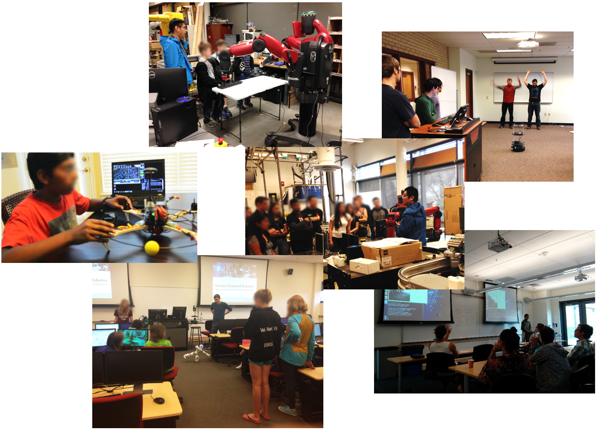

Prof. Hao Zhang initiated and is directing the outreach and education program named PROGRESS (i.e., Program for Robotics Outreach on Gender and Racial Equity in School and Society) to provide lab tours, robot demonstrations, presentations, lectures, and workshops to K-12 students and teachers as well as to educate the general public. If you are interested in PROGRESS or want to visit HCRobotics Lab, please contact Prof. Hao Zhang.
